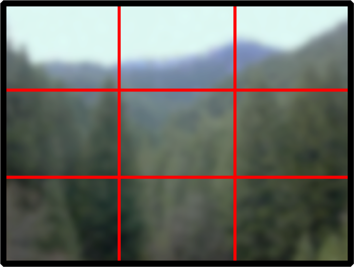
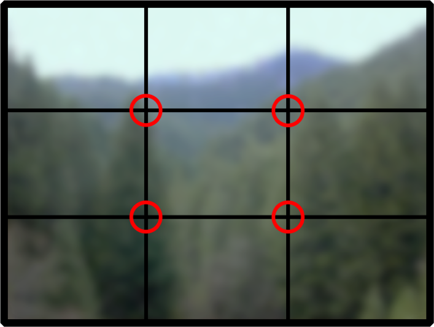

Provavelmente a composição é a primeira preocupação de quem tenta melhorar suas fotos. Composição é basicamente a decisão do que vai aparecer na foto e o que não vai e da posição dos assuntos na foto.
Não existe uma regra certa para a composição. Ela varia de acordo com a impressão que você quer causar com a foto. É possível usar a composição para transmitir a ideia de harmonia, repetição, desequilíbrio, etc.
Porém, algumas dicas simples podem facilitar a sua vida se estiver sem ideias. A primeira é uma das mais usadas, inclusive por fotógrafos profissionais: a regra dos terços
A regra
A composição mais intuitiva é sempre posicionar o assunto principal no centro da foto, como se o centro fosse a região principal. Na realidade, o olho humano tende a focar mais em quatro pontos da foto, definidos pela regra dos terços.
A regra é simples: desenhar duas linhas imaginárias horizontais para dividir a foto em três partes iguais e fazer o mesmo com três linhas verticais. Você vai conseguir algo parecido com isso:
As linhas se cruzam em quatro pontos, os chamados pontos de interesse. São esses pontos que recebem mais atenção do expectador. É interessante colocar o assunto próximo a esses pontos.
Além dos pontos, as linhas horizontais e verticais também são interessantes para orientar sua composição. Posicionar o a linha do horizonte em uma das linhas horizontais é muitas vezes mais interessante do que posicioná-la no meio. Você pode posicionar na linha de cima quando o assunto principal estiver no solo (ou for o solo) e posicionar na linha de baixo quando o quiser destacar o céu.
Segue abaixo um exemplo de foto usando a regra dos terços. Note como o céu ocupa dois terços e como a estrutura da ponte está alinhada com uma das retas verticais.

Você também pode usar os terços para dar a indeia de movimento. Por exemplo: dois terços vazios à direita e um cavalo trotando à esquerda.